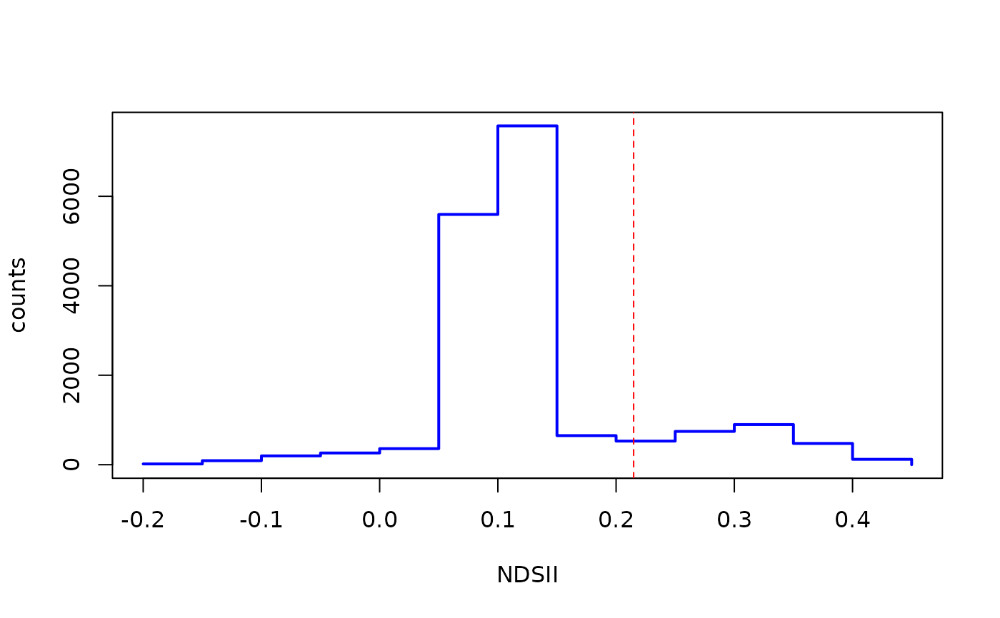

This function creates an NDSII histogram with a vertical line showing the selected threshold discriminating snow and ice.
Arguments
- NDSII
SpatRaster. Normalized Difference Snow Ice Index (NDSII).
- th
numeric. NDSII threshold to discriminate between snow and ice.
- breaks
one of:
a vector giving the breakpoints between histogram cells,
a function to compute the vector of breakpoints,
a single number giving the number of cells for the histogram,
a character string naming an algorithm to compute the number of cells (see ‘Details’),
a function to compute the number of cells.
In the last three cases the number is a suggestion only; as the breakpoints will be set to
prettyvalues, the number is limited to1e6(with a warning if it was larger). Ifbreaksis a function, thexvector is supplied to it as the only argument (and the number of breaks is only limited by the amount of available memory).- stdev
numeric. Standard deviation cutoff value for histogram stretching.
Examples
green <- system.file("extdata/athabasca_B03_20200911.tif", package = "SatRbedo")
nir <- system.file("extdata/athabasca_B8A_20200911.tif", package = "SatRbedo")
outline <- system.file("extdata/athabasca_outline.shp", package = "SatRbedo")
green <- preproc(grd = green, outline = outline)
nir <- preproc(grd = nir, outline = outline)
res <- snow_or_ice(green, nir)
NDSII_hist(res$NDSII, res$th, breaks = 16, stdev = 3)
